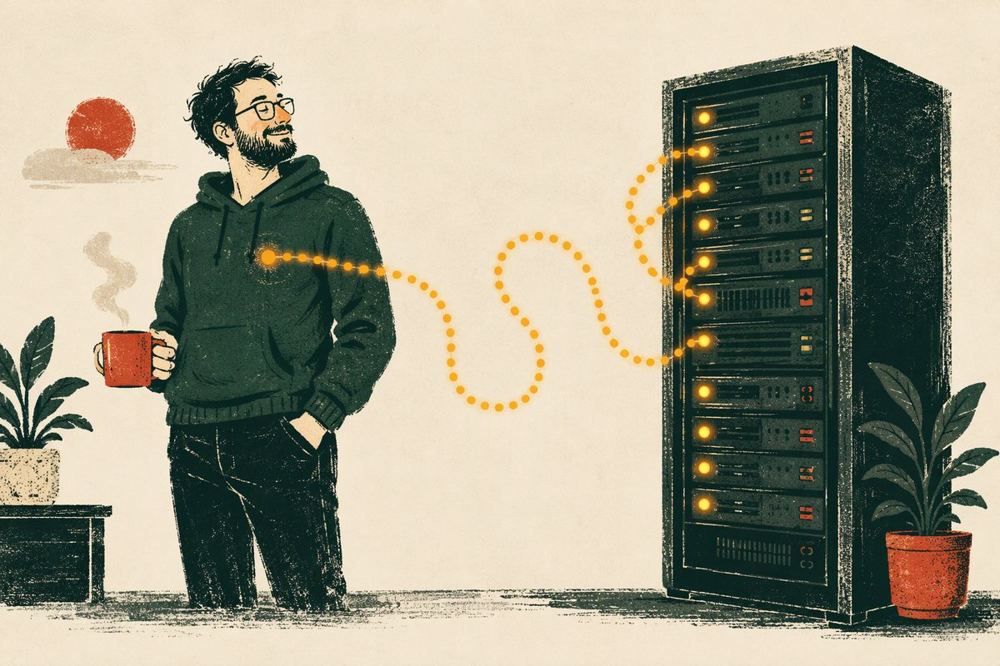
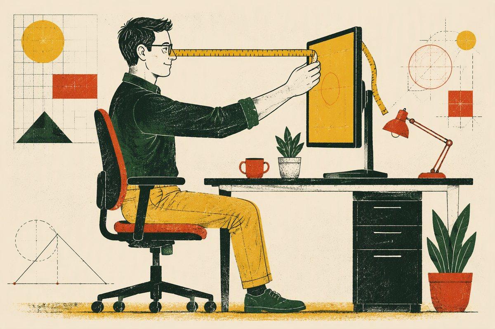
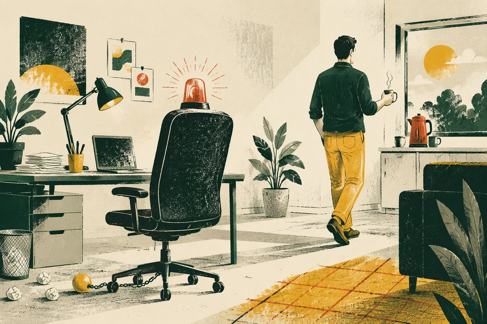
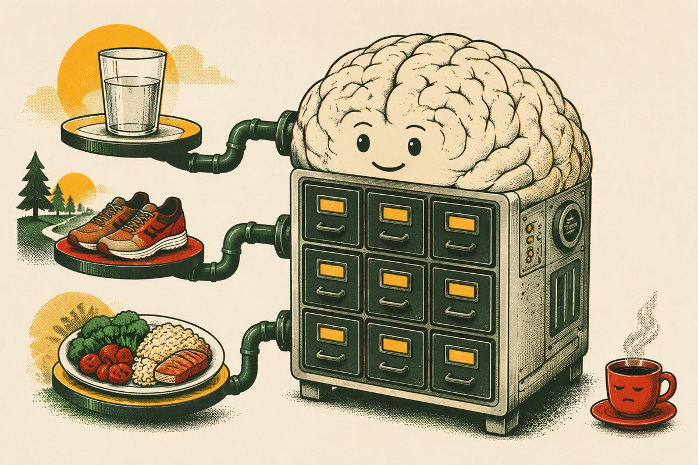
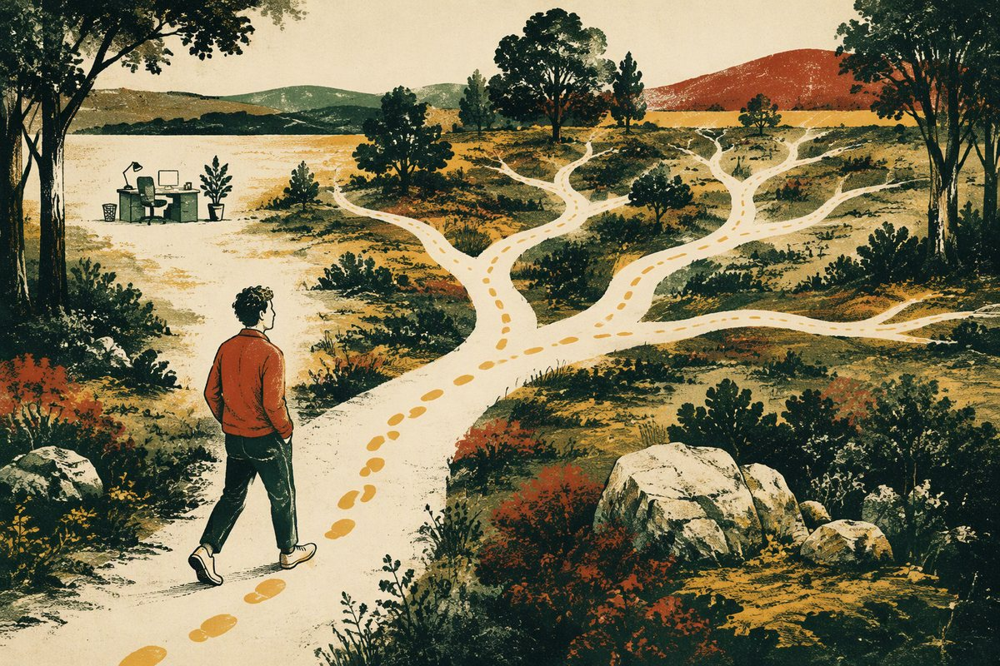
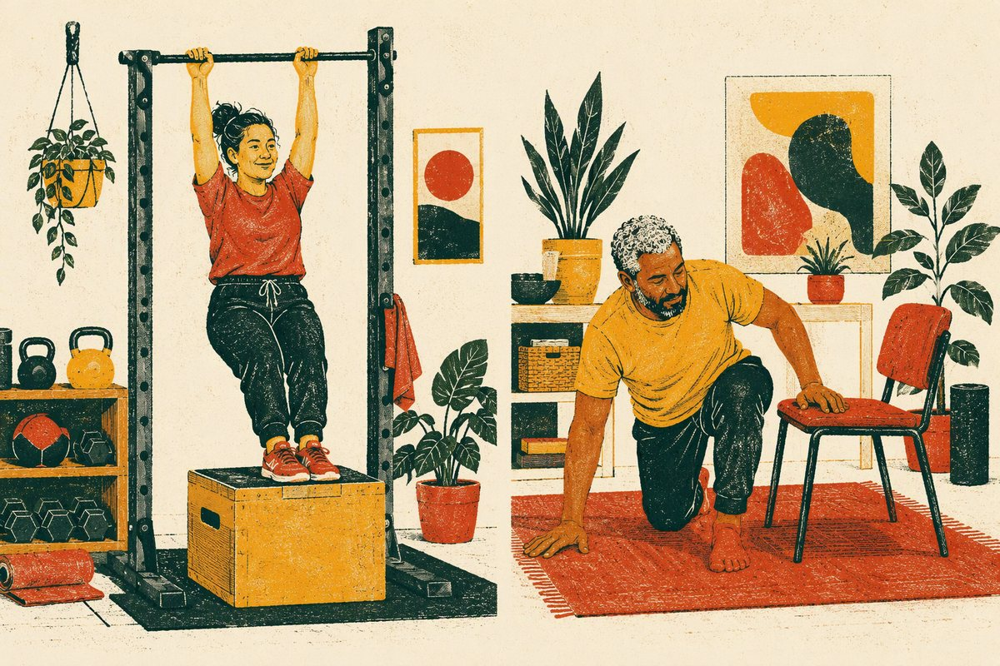
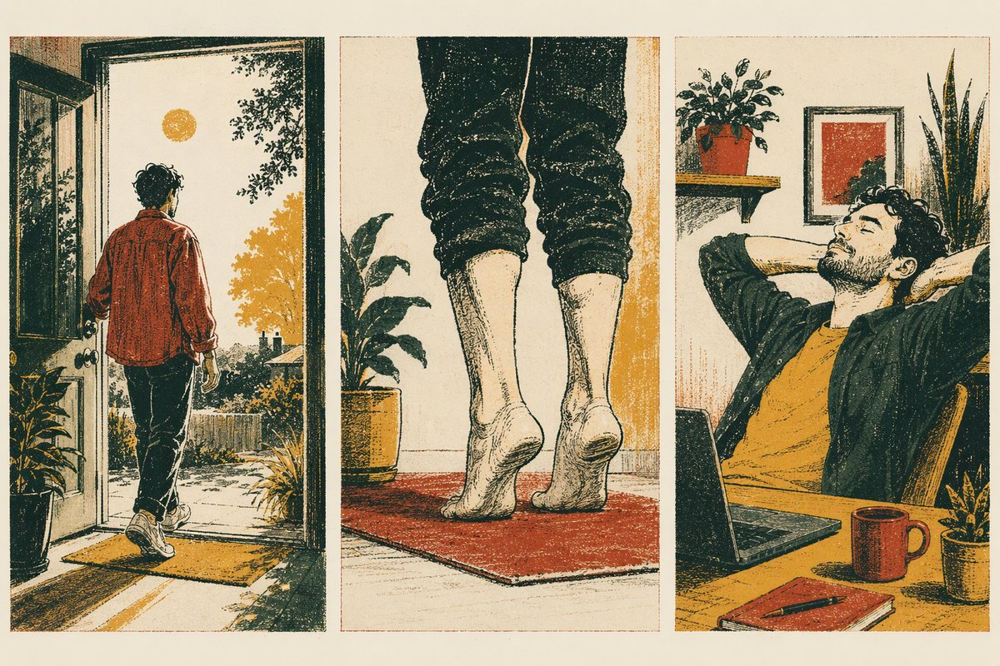

Friday Morning Coffee, episode twelve: your production database gets maintenance windows. Your body gets a chair, a deadline and another coffee.
Wojciech MrukFriday Morning CoffeeInsights #12

Stop 01 Welcome aboard
The system with no monitoring
Morning, team. Look at the care we give our systems. Processors get thermal limits. Databases get indexes, backups and patient maintenance windows. A suspicious disk gets more attention in one afternoon than a suspicious knee gets in six months.
Then there is the machine running the engineer. It sits for hours, reads a screen at whatever distance the desk allows, forgets to drink until the headache has opened a ticket, and is expected to produce clear thinking on random meals and interrupted sleep. We call this normal because the error messages arrive gradually.
This is not a conversion programme. No ice bath, no 5 a.m. accountability cult, no new identity as a person who photographs breakfast. Just a few low-drama adjustments to the hardware you already own. Coffee first. Then we add monitoring.
Stop 02 Hardware calibration
Your monitor is not a close-up magic trick
A workstation should not require your neck to negotiate with it. UK workplace guidance puts the top of the screen roughly level with your eyes and the display about an arm’s length away. That is a starting position, not a legal unit of measurement: adjust for your eyesight, lenses and the actual work.

Illustration: the most advanced component in this setup is the neck (Line 12 digital press).
For tired, dry screen eyes, the American Academy of Ophthalmology suggests the 20-20-20 habit: every 20 minutes, look at something at least 20 feet away for at least 20 seconds. Blink. Let your focus change distance. This is relief for temporary discomfort, not a force field against every eye problem.
If you are leaning towards the screen, the interface is winning.
WHO guidance is refreshingly unglamorous: limit sedentary time and replace some of it with physical activity of any intensity, including light movement. It does not prescribe an official five-minute break every hour. That interval is a useful desk habit, not an international standard with a compliance auditor.

Illustration: process interrupted; no emergency change advisory board required (Line 12 digital press).
Stand up, walk to the kettle, take the stairs, do a few comfortable sit-to-stands. Put the break after a meeting or at the end of a work block so it happens without another notification competing for your attention. A couple of easy minutes is a perfectly valid transaction.
And no, we are not repeating the internet claim that sitting for exactly 60 minutes switches off 90% of your fat-burning enzymes. That dramatic number has escaped from a much more complicated research context. The useful message survives without it: do not let the whole day pass in one uninterrupted seated block.
A short walk is a cheap way to change state: leave the screen, move, look at something farther away than your own deadlines. Exercise research does discuss BDNF and cognition, but there is no honest basis for promising that three minutes will reliably upgrade working memory through one neat biochemical mechanism. Take the walk because a break is useful, not because a molecule has signed an SLA.
Keep water within reach and drink according to thirst. Mild dehydration can affect mood and aspects of attention, although the popular comparison that 1–2% dehydration is somehow faster than a bad night’s sleep is not a useful engineering specification. If you are thirsty, have a drink; you do not need a dashboard to validate the sensation.

Illustration: fewer mystical inputs, more predictable maintenance (Line 12 digital press).
The same goes for lunch. There is no universal 30-minute dopamine spike followed by exactly two hours of system lag. Real meals and real people are less tidy. A regular meal built around protein, fibre-rich carbohydrates and unsaturated fats is a more defensible default than a vending-machine-only microservices architecture. Omega-3 and vitamin D are nutrients, not magic toggles; supplements are a separate question, not a blanket instruction from a Friday newsletter.
Walking is the least glamorous intervention and the easiest to keep. A 2025 meta-analysis found that 7,000 steps a day, compared with 2,000, was associated with 47% lower all-cause mortality. That is an association across studies, not a promise that your personal risk drops by 47% when the watch vibrates. Earlier research also suggests that benefits begin well below 10,000 and level off at different ranges by age.

Illustration: the index works best when somebody actually uses it (Line 12 digital press).
Start with a repeatable route: ten minutes after lunch, a walk during one phone call, or getting off one stop earlier when practical. Short post-meal activity can reduce the glucose excursion compared with staying inactive, although the trials are small. The walk is not a punishment for eating and it does not need to erase anything.
The best step count is the one that survives Wednesday.
Grip strength is a neat little summary of overall muscle function, and lower values are associated with worse health outcomes, especially in older adults. That makes it a useful screening and training signal. It does not mean a hand gripper has been clinically proven to extend your life, prevent dementia or make you impossible to kill in a server-room accident.
Use the unglamorous version: carry the shopping, row, climb, lift something suitable, or practise a supported hang if your shoulders are happy. Train the larger pattern, not just the number on a dynamometer. If you enjoy measuring, measure consistently; if you do not, the shopping bags will keep the logs.
The dead hang. This is the patch with the weakest direct evidence in today’s episode. A comfortable hang can be grip and shoulder-endurance practice, and it may feel like a pleasant stretch. It is not a proven method for repairing discs, permanently decompressing a spine or adding years to your warranty.

Illustration: feet welcome; heroics not required (Line 12 digital press).
If you try it, keep your feet on the floor or a box, stay within a comfortable range, and skip it if hanging hurts or your shoulder is unstable. There is no prize for turning a stretch into a new incident.
The sitting-rising test. Sitting down on the floor and rising again combines strength, balance, mobility and body composition. In a 2025 cohort study of 4,282 adults aged 46–75, lower scores were associated with higher natural and cardiovascular mortality over a median 12.3-year follow-up. It is a risk indicator, not a diagnosis or destiny. Use support if needed, practise the capability rather than chasing a score, and do not turn it into an office leaderboard.
Three small services, each with honest documentation
Get outdoor light after waking. Daytime light exposure is associated with sleep, mood and easier waking in observational research. Step outside for a few minutes when you can; a cloudy Irish morning still gives you a very different light environment from an office ceiling. No need to stare at the sun, and no need to pretend that five photons set a universal 14-hour melatonin timer.
Try the soleus push-up, without the social-media exaggeration. Seated, keep the front of each foot down and lift the heels in a controlled, repeatable movement. The original laboratory research used sustained contractions over hours and found improved glucose and lipid regulation. A small 2025 prediabetes pilot reported about a 32% lower post-meal glucose excursion during the test. A handful of quick calf raises is not the same protocol, and none of this replaces walking or exercise.

Illustration: lightweight background jobs, not a substitute for the main application (Line 12 digital press).
Notice the email-apnea pattern. During concentrated reading, email or coding, some people catch themselves holding their breath or breathing shallowly. The fix is not a promised 10–15% increase in brain oxygenation; that number does not survive inspection. Simply notice the pattern, unclench your jaw, lower your shoulders and breathe quietly and comfortably. Through the nose if it is clear and pleasant, through the mouth if not. This is a relaxation reset, not respiratory dogma.
Seven patches is too many to deploy at once, especially on a Friday. Pick one that solves an actual problem: raise the monitor, put a walk after lunch, get outdoor light, or practise getting off the floor with support nearby. Keep it small enough that next week does not require a new personality.
Some of these are established guidelines, some are observational markers, and one is a pleasant stretch with an overactive marketing department. They are not interchangeable. The engineering skill is not collecting hacks; it is knowing what the evidence says, what it does not say, and which change you will still be doing in March.
Treat yourself with at least half the care you give a production database.
Have a well-indexed Friday. And as ever, your own clinician outranks a newsletter.
End of the line.
Have a great weekend, everyone. Stand up, fetch a coffee, and let the chair recover its connection pool. We are still at ///maybe.clays.lending.